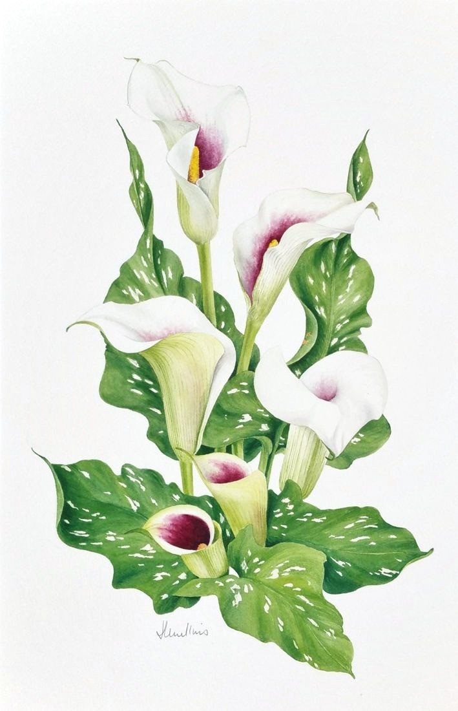

Zantedeschia
No. 35- Medium
- Watercolour on paper
- Size
- 47 × 30 cm
- Year
- 1990s
- Price
- £190
I grew this plant without realizing just how unusual the flowers were. I painted them here in various stages of opening.
Ask about this paintingOr email enquiries@joanmullinsart.co.uk, quoting No. 35. UK only. Collection from Nantwich is free; UK postage is quoted when you enquire.